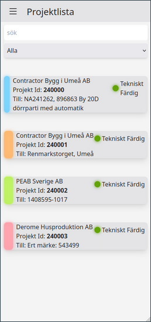
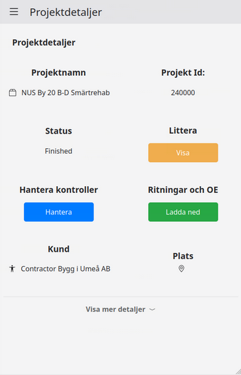
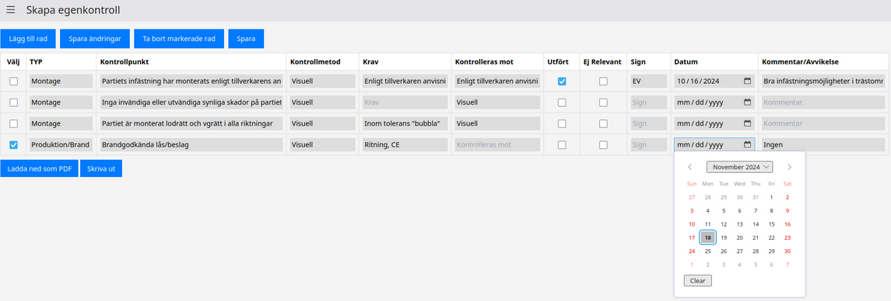

av Alice Johansson
November 21, 2024
De senaste veckornas arbete har inte varit riktat mot att lägga till mycket ny funktionalitet utan snarare på att uppdatera den existerande funktionaliteten för att få den till ett fulländat och kravföljande stadie.
På frontendsidan har fokus legat på att koppla ihop webbsidan med backenden för att kunna visa den verkliga datan istället för testdata. Där har till exempel Hannes blivit klar med att koppla ihop projektlistan och projektdetaljerna med backenden och arbetar just nu med att göra detsamma för den egenkontrollssida som han sedan senaste blogginlägget hunnit till stor del färdigställa. Även Meba har arbetat på att fixa egenkontrollskopplingen men har även kopplad skapningen av användare och visandet av profiler med databasen och skapat funktionalitet för att skriva ut egenkontrollerna.
Robin på frontendsidan har tillsammans med Helge på backendsidan färdigställt inloggningen. Den visade sig ha ett flertal svårigheter att övervinna innan den var fullt fungerande med alla olika konfigurationer av webbläsare, datorer och användare. I samband med det arbetet har de implementerat funktionalitet för att skapa nya användarkonton och att styra vad en användare kan se och göra i applikationen baserat på deras roll inom företaget. Helge arbetar just nu vidare på att möta ett av de sista kvarvarande kraven från Öjebyns G&A som ännu inte färdigställts: tvåfaktorsautentisering på inloggningen. Robin har även hunnit implementera sökning och filtrering av projekt sen det senaste blogginlägget.
På backenden så har Mattias fortsatt suttit med databasfunktionalitet. Att hantera de uppdaterade egenkontrollerna som han arbetade på under förra blogginlägget har han nu blivit färdig med. Egenkontrollerna kan nu skapas från mallar som administrativ personal kan redigera, innehåller alla nödvändiga fält och stödjer även flera språk. Utöver det så har han varit delaktig i arbetet med att koppla ihop frontend och backend genom att uppdatera vad som behövts på backendsidan för att saker smidigt och fungerande ska sitta ihop och även implementerat testning av alla databasfunktioner.
Jenny och Elvira har implementerat den caching av data från de externa APIerna som nämndes i förra inlägget. En gång om dygnet kommer cachen att uppdateras och genom att hämta data från denna cache kan anrop som tidigare tog flera minuter för vissa användare gå på endast några millisekunder.
Alice har även hon arbetat med den sista stora icke-färdigställda featuren, egenkontroller, specifikt med att implementera funktionalitet för att koppla statusen på ett littera till vilka egenkontrollsfält som är markerade som färdigställda. Det är något som kommer att vara mycket smidigare för personalen än att man manuellt skulle behöva markera ett aluminiumparti som tillverkat eller monterat när egenkontrollerna ändå måste vara färdigställda vid slutet på varje steg för att litterat ska kunna gå vidare till nästa.
Den sista kvarvarande tiden lär gå till de två kvarvarande featursen som inte fått sin implementation påbörjad, uppladdning av ritningar och bilder till egenkontrollerna och utöver det så är det “bara” att se till att allt som arbetas på färdigställs, att allt testas och att applikationen som helhet är fungerande enligt de krav som ställts.
För att avsluta inlägget är här några bilder på hur applikationen just nu ser ut:
  